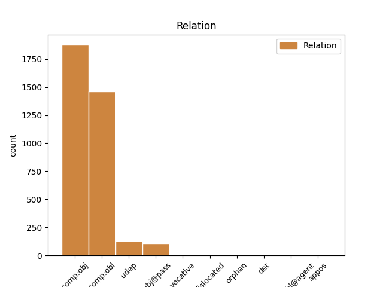
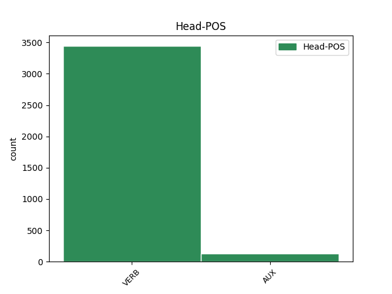
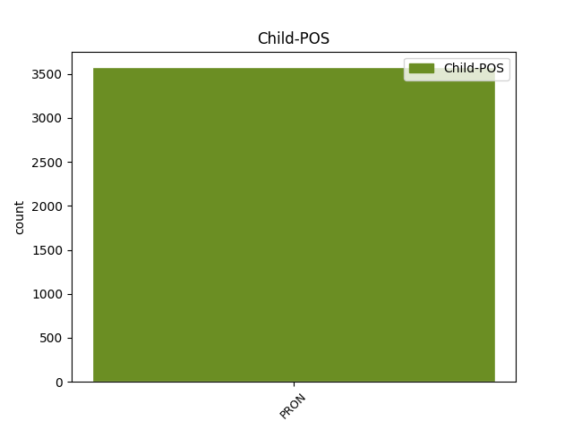

Distribution of features within this leaf



Agreement Rules sorted by frequency.
- When the dependent token is the direct object complements(comp:obj) of the head token, and the head token is VERB and the dependent token is PRON.
1 Quae _ _ _ _ 0 _ _ _
2 contemplantes _ _ _ _ 0 _ _ _
3 expendere _ _ _ _ 0 _ _ _
4 oportebit _ _ _ _ 0 _ _ _
5 quid _ _ _ _ 0 _ _ _
6 quisque _ _ _ _ 0 _ _ _
7 habeat _ _ _ _ 0 _ _ _
8 sui _ _ _ _ 0 _ _ _
9 ea _ _ _ _ 0 _ _ _
10 que _ _ _ _ 0 _ _ _
11 moderari _ _ _ _ 0 _ _ _
12 ne _ _ _ _ 0 _ _ _
13 c _ _ _ _ 0 _ _ _
14 velle _ _ _ _ 0 _ _ _
15 experiri _ _ _ _ 0 _ _ _
16 quam _ _ _ _ 0 _ _ _
17 se se PRON Pk Case=Acc|Gender=Masc|Number=Plur|Person=3|PronType=Prs|Reflex=Yes 19 comp:obj _ ref=1.113
18 aliena _ _ _ _ 0 _ _ _
19 deceant decet VERB V- Mood=Sub|Number=Plur|Person=3|Tense=Pres|VerbForm=Fin|Voice=Act 0 _ _ _
1 Sunt _ _ _ _ 0 _ _ _
2 enim _ _ _ _ 0 _ _ _
3 qui _ _ _ _ 0 _ _ _
4 in _ _ _ _ 0 _ _ _
5 rebus _ _ _ _ 0 _ _ _
6 contrariis _ _ _ _ 0 _ _ _
7 parum _ _ _ _ 0 _ _ _
8 sibi se PRON Pk Case=Dat|Gender=Masc|Number=Plur|Person=3|PronType=Prs|Reflex=Yes 9 comp:obl _ ref=1.71
9 constent consto VERB V- Mood=Sub|Number=Plur|Person=3|Tense=Pres|VerbForm=Fin|Voice=Act 0 _ _ _
10 voluptatem _ _ _ _ 0 _ _ _
11 severissime _ _ _ _ 0 _ _ _
12 contemnant _ _ _ _ 0 _ _ _
13 in _ _ _ _ 0 _ _ _
14 dolore _ _ _ _ 0 _ _ _
15 sint _ _ _ _ 0 _ _ _
16 molliores _ _ _ _ 0 _ _ _
17 gloriam _ _ _ _ 0 _ _ _
18 neglegant _ _ _ _ 0 _ _ _
19 frangantur _ _ _ _ 0 _ _ _
20 infamia _ _ _ _ 0 _ _ _
21 atque _ _ _ _ 0 _ _ _
22 ea _ _ _ _ 0 _ _ _
23 quidem _ _ _ _ 0 _ _ _
24 non _ _ _ _ 0 _ _ _
25 satis _ _ _ _ 0 _ _ _
26 constanter _ _ _ _ 0 _ _ _
1 Est _ _ _ _ 0 _ _ _
2 enim _ _ _ _ 0 _ _ _
3 quiddam _ _ _ _ 0 _ _ _
4 id is PRON Pp Case=Nom|Gender=Neut|Number=Sing|Person=3|PronType=Prs 6 subj@pass _ ref=1.95
5 que _ _ _ _ 0 _ _ _
6 intellegitur intellego VERB V- Mood=Ind|Number=Sing|Person=3|Tense=Pres|VerbForm=Fin|Voice=Pass 0 _ _ _
7 in _ _ _ _ 0 _ _ _
8 omni _ _ _ _ 0 _ _ _
9 virtute _ _ _ _ 0 _ _ _
10 quod _ _ _ _ 0 _ _ _
11 deceat _ _ _ _ 0 _ _ _
1 quamquam _ _ _ _ 0 _ _ _
2 haec _ _ _ _ 0 _ _ _
3 quidem _ _ _ _ 0 _ _ _
4 res _ _ _ _ 0 _ _ _
5 non _ _ _ _ 0 _ _ _
6 solum _ _ _ _ 0 _ _ _
7 ex _ _ _ _ 0 _ _ _
8 domestica _ _ _ _ 0 _ _ _
9 est _ _ _ _ 0 _ _ _
10 ratione _ _ _ _ 0 _ _ _
11 attingit _ _ _ _ 0 _ _ _
12 etiam _ _ _ _ 0 _ _ _
13 bellicam _ _ _ _ 0 _ _ _
14 quoniam _ _ _ _ 0 _ _ _
15 vi _ _ _ _ 0 _ _ _
16 manu _ _ _ _ 0 _ _ _
17 que _ _ _ _ 0 _ _ _
18 confecta _ _ _ _ 0 _ _ _
19 est _ _ _ _ 0 _ _ _
20 sed _ _ _ _ 0 _ _ _
21 tamen _ _ _ _ 0 _ _ _
22 id is PRON Pp Case=Nom|Gender=Neut|Number=Sing|Person=3|PronType=Prs 24 subj@pass _ ref=1.76
23 ipsum _ _ _ _ 0 _ _ _
24 est sum AUX V- Mood=Ind|Number=Sing|Person=3|Tense=Pres|VerbForm=Fin|Voice=Act 0 _ _ _
25 gestum _ _ _ _ 0 _ _ _
26 consilio _ _ _ _ 0 _ _ _
27 urbano _ _ _ _ 0 _ _ _
28 sine _ _ _ _ 0 _ _ _
29 exercitu _ _ _ _ 0 _ _ _
1 Ne _ _ _ _ 0 _ _ _
2 c _ _ _ _ 0 _ _ _
3 mi ego PRON Pp Case=Dat|Gender=Masc|Number=Sing|Person=1|PronType=Prs 5 udep _ ref=1.38
4 aurum _ _ _ _ 0 _ _ _
5 posco posco VERB V- Mood=Ind|Number=Sing|Person=1|Tense=Pres|VerbForm=Fin|Voice=Act 0 _ _ _
6 ne _ _ _ _ 0 _ _ _
7 c _ _ _ _ 0 _ _ _
8 mi _ _ _ _ 0 _ _ _
9 pretium _ _ _ _ 0 _ _ _
10 dederitis _ _ _ _ 0 _ _ _
1 nam _ _ _ _ 0 _ _ _
2 mihi _ _ _ _ 0 _ _ _
3 Ister _ _ _ _ 0 _ _ _
4 dixit _ _ _ _ 0 _ _ _
5 te _ _ _ _ 0 _ _ _
6 scripsisse _ _ _ _ 0 _ _ _
7 ad _ _ _ _ 0 _ _ _
8 se _ _ _ _ 0 _ _ _
9 mihi _ _ _ _ 0 _ _ _
10 ex _ _ _ _ 0 _ _ _
11 illius _ _ _ _ 0 _ _ _
12 litteris _ _ _ _ 0 _ _ _
13 rem _ _ _ _ 0 _ _ _
14 illam _ _ _ _ 0 _ _ _
15 curae _ _ _ _ 0 _ _ _
16 fuisse _ _ _ _ 0 _ _ _
17 quod _ _ _ _ 0 _ _ _
18 ei is PRON Pp Case=Dat|Gender=Masc|Number=Sing|Person=3|PronType=Prs 20 udep _ ref=5.11.6
19 pergratum _ _ _ _ 0 _ _ _
20 erat sum AUX V- Aspect=Imp|Mood=Ind|Number=Sing|Person=3|Tense=Past|VerbForm=Fin|Voice=Act 0 _ _ _
1 nihil _ _ _ _ 0 _ _ _
2 enim _ _ _ _ 0 _ _ _
3 a _ _ _ _ 0 _ _ _
4 me _ _ _ _ 0 _ _ _
5 fieri _ _ _ _ 0 _ _ _
6 ita _ _ _ _ 0 _ _ _
7 videbunt _ _ _ _ 0 _ _ _
8 ut _ _ _ _ 0 _ _ _
9 sibi se PRON Pk Case=Dat|Gender=Masc|Number=Plur|Person=3|PronType=Prs|Reflex=Yes 10 comp:obl _ ref=5.11.5
10 sit sum AUX V- Mood=Sub|Number=Sing|Person=3|Tense=Pres|VerbForm=Fin|Voice=Act 0 _ _ _
11 delinquendi _ _ _ _ 0 _ _ _
12 locus _ _ _ _ 0 _ _ _
1 ei is PRON Pp Case=Dat|Number=Sing|Person=3|PronType=Prs 10 dislocated _ ref=MATT_25.29
2 autem _ _ _ _ 0 _ _ _
3 qui _ _ _ _ 0 _ _ _
4 non _ _ _ _ 0 _ _ _
5 habet _ _ _ _ 0 _ _ _
6 et _ _ _ _ 0 _ _ _
7 quod _ _ _ _ 0 _ _ _
8 videtur _ _ _ _ 0 _ _ _
9 habere _ _ _ _ 0 _ _ _
10 auferetur aufero VERB V- Mood=Ind|Number=Sing|Person=3|Tense=Fut|VerbForm=Fin|Voice=Pass 0 _ _ _
11 ab _ _ _ _ 0 _ _ _
12 eo _ _ _ _ 0 _ _ _
1 et _ _ _ _ 0 _ _ _
2 tu tu PRON Pp Case=Voc|Gender=Fem,Masc|Number=Sing|Person=2|PronType=Prs 8 vocative _ ref=MATT_11.23
3 Capharnaum _ _ _ _ 0 _ _ _
4 numquid _ _ _ _ 0 _ _ _
5 usque _ _ _ _ 0 _ _ _
6 in _ _ _ _ 0 _ _ _
7 caelum _ _ _ _ 0 _ _ _
8 exaltaberis exalto VERB V- Mood=Ind|Number=Sing|Person=2|Tense=Fut|VerbForm=Fin|Voice=Pass 0 _ _ _
1 Horum _ _ _ _ 0 _ _ _
2 vocibus _ _ _ _ 0 _ _ _
3 ac _ _ _ _ 0 _ _ _
4 timore _ _ _ _ 0 _ _ _
5 paulatim _ _ _ _ 0 _ _ _
6 etiam _ _ _ _ 0 _ _ _
7 ii is PRON Pp Case=Nom|Gender=Masc|Number=Plur|Person=3|PronType=Prs 21 det _ ref=1.39.5
8 qui _ _ _ _ 0 _ _ _
9 magnum _ _ _ _ 0 _ _ _
10 in _ _ _ _ 0 _ _ _
11 castris _ _ _ _ 0 _ _ _
12 usum _ _ _ _ 0 _ _ _
13 habebant _ _ _ _ 0 _ _ _
14 milites _ _ _ _ 0 _ _ _
15 centuriones _ _ _ _ 0 _ _ _
16 que _ _ _ _ 0 _ _ _
17 qui _ _ _ _ 0 _ _ _
18 que _ _ _ _ 0 _ _ _
19 equitatui _ _ _ _ 0 _ _ _
20 praeerant _ _ _ _ 0 _ _ _
21 perturbabantur perturbo VERB V- Aspect=Imp|Mood=Ind|Number=Plur|Person=3|Tense=Past|VerbForm=Fin|Voice=Pass 0 _ _ _
Disagree Examples:
1 et _ _ _ _ 0 _ _ _
2 cum _ _ _ _ 0 _ _ _
3 inveneritis _ _ _ _ 0 _ _ _
4 renuntiate renuntio VERB V- Mood=Imp|Number=Plur|Person=2|Tense=Pres|VerbForm=Fin|Voice=Act 0 _ _ _
5 mihi ego PRON Pp Case=Dat|Gender=Fem,Masc|Number=Sing|Person=1|PronType=Prs 4 comp:obl _ ref=MATT_2.8
6 ut _ _ _ _ 0 _ _ _
7 et _ _ _ _ 0 _ _ _
8 ego _ _ _ _ 0 _ _ _
9 veniens _ _ _ _ 0 _ _ _
10 adorem _ _ _ _ 0 _ _ _
11 eum _ _ _ _ 0 _ _ _
1 et _ _ _ _ 0 _ _ _
2 cum _ _ _ _ 0 _ _ _
3 inveneritis _ _ _ _ 0 _ _ _
4 renuntiate _ _ _ _ 0 _ _ _
5 mihi _ _ _ _ 0 _ _ _
6 ut _ _ _ _ 0 _ _ _
7 et _ _ _ _ 0 _ _ _
8 ego _ _ _ _ 0 _ _ _
9 veniens _ _ _ _ 0 _ _ _
10 adorem adoro VERB V- Mood=Sub|Number=Sing|Person=1|Tense=Pres|VerbForm=Fin|Voice=Act 0 _ _ _
11 eum is PRON Pp Case=Acc|Gender=Masc|Number=Sing|Person=3|PronType=Prs 10 comp:obj _ ref=MATT_2.8
1 surge _ _ _ _ 0 _ _ _
2 et _ _ _ _ 0 _ _ _
3 accipe _ _ _ _ 0 _ _ _
4 puerum _ _ _ _ 0 _ _ _
5 et _ _ _ _ 0 _ _ _
6 matrem _ _ _ _ 0 _ _ _
7 eius _ _ _ _ 0 _ _ _
8 et _ _ _ _ 0 _ _ _
9 fuge _ _ _ _ 0 _ _ _
10 in _ _ _ _ 0 _ _ _
11 Aegyptum _ _ _ _ 0 _ _ _
12 et _ _ _ _ 0 _ _ _
13 esto _ _ _ _ 0 _ _ _
14 ibi _ _ _ _ 0 _ _ _
15 usque _ _ _ _ 0 _ _ _
16 dum _ _ _ _ 0 _ _ _
17 dicam dico VERB V- Mood=Ind|Number=Sing|Person=1|Tense=Fut|VerbForm=Fin|Voice=Act 0 _ _ _
18 tibi tu PRON Pp Case=Dat|Gender=Fem,Masc|Number=Sing|Person=2|PronType=Prs 17 comp:obl _ ref=MATT_2.13
1 progenies _ _ _ _ 0 _ _ _
2 viperarum _ _ _ _ 0 _ _ _
3 quis _ _ _ _ 0 _ _ _
4 demonstravit demonstro VERB V- Aspect=Perf|Mood=Ind|Number=Sing|Person=3|Tense=Past|VerbForm=Fin|Voice=Act 0 _ _ _
5 vobis vos PRON Pp Case=Dat|Gender=Fem,Masc|Number=Plur|Person=2|PronType=Prs 4 comp:obl _ ref=MATT_3.7
6 fugere _ _ _ _ 0 _ _ _
7 a _ _ _ _ 0 _ _ _
8 futura _ _ _ _ 0 _ _ _
9 ira _ _ _ _ 0 _ _ _
1 dico dico VERB V- Mood=Ind|Number=Sing|Person=1|Tense=Pres|VerbForm=Fin|Voice=Act 0 _ _ _
2 enim _ _ _ _ 0 _ _ _
3 vobis vos PRON Pp Case=Dat|Gender=Fem,Masc|Number=Plur|Person=2|PronType=Prs 1 comp:obl _ ref=MATT_3.9
4 quoniam _ _ _ _ 0 _ _ _
5 potest _ _ _ _ 0 _ _ _
6 Deus _ _ _ _ 0 _ _ _
7 de _ _ _ _ 0 _ _ _
8 lapidibus _ _ _ _ 0 _ _ _
9 istis _ _ _ _ 0 _ _ _
10 suscitare _ _ _ _ 0 _ _ _
11 filios _ _ _ _ 0 _ _ _
12 Abrahae _ _ _ _ 0 _ _ _